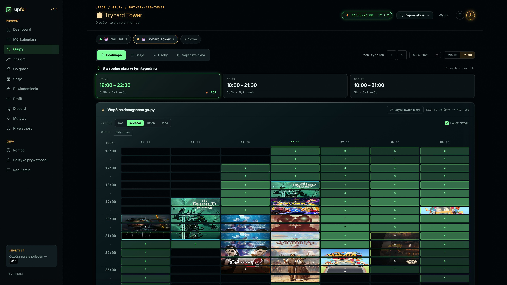

upfor BETA
Kalendarz dostępności gamingowej z AI
Apka, która pomaga ekipie ustalić wspólny termin grania. Każdy zaznacza swoje wolne godziny na tygodniowej siatce, a aplikacja liczy, kiedy wszyscy mają czas naraz, i pokazuje to jako heatmapę.
Konkretny termin sesji podpowiada Claude. Całość działa w Discordzie, gdzie grupa i tak siedzi, i nie zbiera niepotrzebnych danych.
langTypeScript
frameworkNext.js 15
AIClaude Haiku 4.5
botDiscord.js
APItRPC v11
kod~113k
testy~17k
- Next.js 15 (App Router) + React 19, w pełni typowane w TypeScript
- Siatka 7×48 (7 dni × 48 półgodzinnych slotów) jako interaktywna heatmapa nakładania się dostępności
- Bot Discord: 18 polskich slash-komend, dwukierunkowa synchronizacja w czasie rzeczywistym
- Monorepo (Turborepo): 27 modeli danych, 20 routerów tRPC (~125 procedur), realtime po Postgres LISTEN/NOTIFY → SSE
- Claude Haiku 4.5 z tool-use: model wywołuje funkcje liczące wspólne okno dostępności
- Utrzymanie spójnego stanu w czasie rzeczywistym, gdy ten sam slot zmienia i aplikacja, i bot Discord
- Zaprojektowanie tool-use tak, by model proponował realne wspólne okno, a nie „prawie” pasujący termin
- Strefy czasowe, w których ten sam slot to u każdego inna lokalna godzina